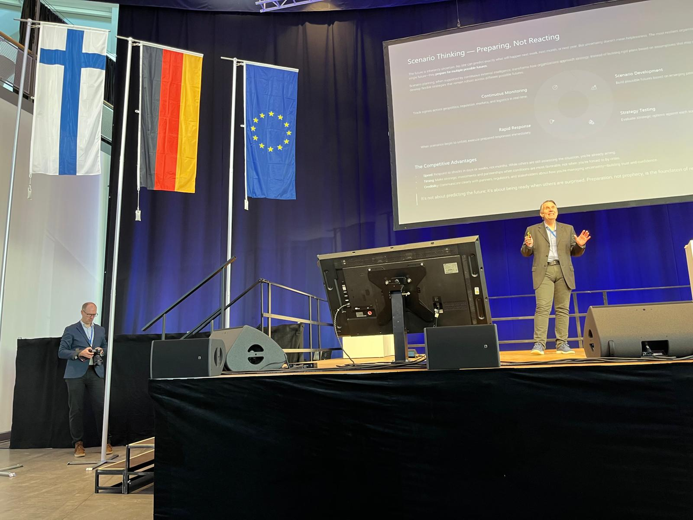

Geopolitics
Mission Grey at the Deutsch-Finnisches Businessforum 2025
Mission Grey’s Chairman, Jouko Ahvenainen, will deliver a keynote at the Deutsch-Finnisches Businessforum 2025, being held in Lübeck, Germany on 4–5 November, under the theme “Resilience in Business Operations and Supply Chains”. The forum brings together German and Finnish companies, government representatives, and public institutions to explore solutions in industry, energy, and logistics.

(Eine deutsche Zusammenfassung dieses Beitrags finden Sie am Ende des Artikels.)
In an era of shifting geopolitics, rising regulation, and climate- and tech-driven disruption, companies can no longer rely solely on internal analytics. While enterprise systems tell you what’s happening inside your walls, the most decisive risks and opportunities now come from the outside. External intelligence, continuous monitoring of political, economic, regulatory, and environmental signals, has become a strategic necessity.
Why Germany, Finland and the Baltic-Sea Region Matter
Germany and Finland maintain deep industrial ties and play central roles in European supply chains, energy systems, and infrastructure. The Baltic Sea routes and ports have grown in strategic importance, but also in vulnerability. Monitoring shifts in regulation, logistics corridors, port disruptions, and supply-chain stress isn’t just about security; it’s about business continuity and competitive advantage.
“You can’t manage what you don’t monitor,” says Jouko Ahvenainen. “Today’s technology lets us monitor the world continuously – even emerging, alternative futures – and organizations that turn data into foresight will win.”
From Data to Action
Mission Grey’s platform aggregates and models vast datasets, from trade flows and regulation to climate impacts and port activity, turning them into actionable foresight. The goal is not just to anticipate disruption but to identify emerging opportunities and help organizations respond. This aligns perfectly with the themes of the forum.
Highlights from the Businessforum Program
This year’s forum gathers an exceptional lineup of leaders from business and government. Among them:
- Timo Jaatinen, Permanent Secretary, Ministry of Economic Affairs and Employment of Finland: “From risk to preparedness – strengthening resilience through partnerships.”
- Axel Hagelstam, Director for International Affairs and Analysis, National Emergency Supply Agency (Finland).
- Dr. Nicole Renvert, Managing Director, International Economic Relations, DIHK (German Chamber of Commerce and Industry).
- Markus Hofmann, Head of Supply Chain & Digitalization, BASF.
- Prof. Dr. Sebastian Jürgens, CEO, Lübecker Hafen Gesellschaft.
Together with these and many other experts from both countries, Mission Grey contributes the perspective of how external intelligence and scenario-based foresight can strengthen resilience across industries, logistics, and public-private cooperation.
External Intelligence Matters Now Because:
- Geopolitical shifts are redefining trade, energy, and security in Europe.
- Regulatory complexity increases uncertainty for manufacturers, logistics providers, and ports.
- Climate transitions and infrastructure threats create new dependencies and risks.
- Resilience now demands an ongoing and global awareness of external signals, not just internal dashboards.
As a firm committed to building “intelligence layers” for business, Mission Grey is excited to join the Businessforum. We look forward to contributing to the dialogue, but more importantly, encouraging organizations to shift from reacting to external change, to preparing for it.
Mission Grey auf dem Deutsch-Finnischen Businessforum 2025 in Lübeck
Mission Grey-Gründer Jouko Ahvenainen spricht beim Deutsch-Finnischen Businessforum 2025 am 4.–5. November in Lübeck über die Bedeutung von externer Intelligenz für wirtschaftliche Resilienz.
In einer Welt wachsender geopolitischer Spannungen, neuer Regulierungen und globaler Lieferkettenrisiken wird kontinuierliche externe Beobachtung zum entscheidenden Erfolgsfaktor für Unternehmen. Mission Grey zeigt, wie Daten aus Politik, Wirtschaft, Klima und Handel zu umsetzbaren Erkenntnissen werden und wie Technologie hilft, Risiken früh zu erkennen und Chancen zu nutzen.
Zu den weiteren Hauptrednern gehören Timo Jaatinen (Finnisches Wirtschaftsministerium), Axel Hagelstam (National Emergency Supply Agency), Dr. Nicole Renvert (DIHK), Markus Hofmann (BASF) und Prof. Dr. Sebastian Jürgens (Lübecker Hafen Gesellschaft).
Das Forum bringt führende Vertreter aus Wirtschaft und Politik Deutschlands und Finnlands zusammen, um Strategien für sichere Lieferketten, Energie- und Infrastrukturresilienz zu diskutieren.
All insights Mission Grey · External intelligence